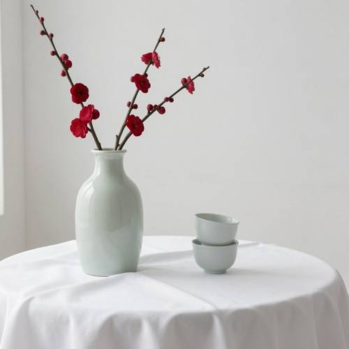
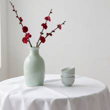
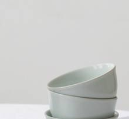
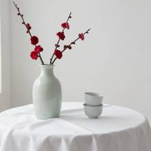
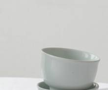
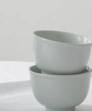

Entity Layout — On a white tablecloth, on the left side of the picture is a celadon va
On a white tablecloth, on the left side of the picture is a celadon vase with a red plum branch, and on the right are two stacked tea cups.


Judge — Direct
- FAILEntity Layout - Two-Dimensional Space — The image correctly places a vase on the left side of the frame and two stacked tea cups on the right side, which aligns with the positional aspect of the prompt. However, the prompt specifically requires the entity on the left to be 'a celadon vase with a red plum branch'. The image depicts a celadon vase containing branches with red berries, not a red plum branch with blossoms. As the entity on the left does not match the description, the layout of the specified entities is not fulfilled.
Judge — Continuum
- PASSEntity Layout - Two-Dimensional Space — In the image, a celadon vase containing branches with red blossoms is situated on the left side of the frame. To the right of the vase, two tea cups are stacked one on top of the other. This arrangement matches the prompt's requirement for the vase to be on the left and the stacked cups on the right.
What the agent did
Thinking
Let me analyze the user's prompt: "On a white tablecloth, with a celadon vase on the left side of the image holding a red plum branch, and on the right, two stacked tea cups." In other words, what I need to generate is: 1. A white tablecloth background/surface 2. On the left side: a celadon vase with a red plum branch (blossom branch) 3. On the right side: two stacked tea cups Let me generate this with flux2-klein. I should flesh out the visual details: - Celadon vase: pale green glaze, typical Song-dynasty style - Red plum branch: plum blossom branch with red flowers, traditional Chinese aesthetic - Two stacked tea cups: small tea cups stacked one on top of the other - White tablecloth: draped white linen/linen cloth Composition: vase on the left, stacked cups on the right. Probably a still-life photograph, soft lighting, elegant Chinese aesthetic. Let me write a good prompt: "Still-life photograph on a white draped tablecloth. On the left, a celadon-glaze porcelain vase with a soft pale-green glaze, holding a single branch of red plum blossoms with deep crimson flowers and buds extending gracefully. On the right, two small tea cups, one stacked on top of the other, in matching porcelain. Soft diffused natural light, serene minimalist Chinese aesthetic, shallow depth of field, fine still-life photography." Width/height: default is 1024x1024. The prompt says "left side of the image" and "on the right," suggesting a landscape composition, but it might be fine with the default. Let me leave the size at default... Actually, since the prompt describes left and right, a wide format might be better. But the benchmark policy says the image size is fixed for comparison, and the harness controls the size. So I should leave width/height at default (1024x1024). The policy says "do not set a seed. The size and seed are controlled by the harness." So leave width/height at default. Let me generate.
Step 1 — `generate_image`
{
"prompt": "Elegant still life photograph on a white draped tablecloth. On the left side of the picture stands a celadon-glazed porcelain vase with a soft pale jade-green glaze, holding a single graceful branch of red plum blossoms with deep crimson flowers and buds. On the right side of the picture, two small porcelain tea cups stacked one on top of the other. Soft diffused natural light, serene minimalist Chinese aesthetic, subtle fabric folds in the white tablecloth, fine art still life photography, sharp focus.",
"model": "flux2-klein"
}Result img_0

Thinking
Let me inspect the result. What's included in the image: - White tablecloth: yes, a white cloth on a round table - Celadon vase on the left side: yes, a pale green celadon vase - Red plum branch: yes, a branch with red plum blossoms - Two stacked tea cups on the right side: hmm, what I'm seeing is... it looks like there are 3 cups in the stack? Let me look more carefully. On the right side there are cups—looks like 3 cups: the top one is tilted, and there seem to be 2 more beneath it. Actually, the prompt says "two stacked tea cups." Let me inspect that region at full resolution and count the cups. Let me inspect the right-side region.
Model
The composition looks close — white cloth, celadon vase with red plum branch on the left. Let me verify the cups on the right, since the prompt asks for exactly two stacked cups.
Step 2 — `inspect_region`
{
"image": "img_0",
"roi": [
480,
500,
720,
720
]
}Result img_1

Thinking
In the cropped image, I can see the following: a tilted cup (top), then one cup below it, and a third cup at the bottom. So it looks like there are 3 cups, not 2. Let me look again: the topmost tilted cup, a second cup in the middle, and a third cup at the bottom. Yeah, it looks like 3 cups. The prompt says "two stacked tea cups." So I need to fix it to exactly 2 cups. Let me edit: "Replace the 3 stacked cups with exactly 2 tea cups stacked on top of each other, with one cup sitting neatly on top of the other." I'll use edit_image with flux2-klein.
Model
The crop shows three cups stacked (top tilted one, middle, and bottom), but the prompt asks for exactly two. I'll fix that.
Step 3 — `edit_image`
{
"image": "img_0",
"model": "flux2-klein",
"prompt": "Replace the stack of three porcelain cups on the right with exactly two small celadon tea cups, one cup placed neatly on top of the other. Keep everything else in the image exactly the same."
}Result img_2

Thinking
Currently, exactly 2 cups are stacked on the right side: 1 tilted cup sitting on top of the cup below it. I'll zoom in to confirm that there are exactly 2 cups and that they are stacked correctly.
Model
Now it looks like two cups. Let me verify at full resolution.
Step 4 — `inspect_region`
{
"image": "img_2",
"roi": [
480,
520,
720,
720
]
}Result img_3

Thinking
The crop I selected only shows the upper portion, with one cup tilted on top of another cup. My crop region may have been cut off at the bottom edge. The whole image showed exactly two cups: one tilted cup stacked on top of one cup below it. Let me try inspecting a region that's a bit lower to check the bottom cup and confirm that only two cups exist.
Model
The crop cut off the bottom. Let me check the full stack with a lower region.
Step 5 — `inspect_region`
{
"image": "img_2",
"roi": [
500,
560,
700,
800
]
}Result img_4

Thinking
Confirmed: exactly two celadon tea cups are stacked, one on top of the other. The upper cup is tilted and resting on the cup below. All prompt elements are present: - White tablecloth ✓ - Celadon vase on the left side ✓ - Red plum branch in the vase ✓ - Two stacked tea cups on the right side ✓ The image looks good. I'll mark this as the best and stop.
Model
Confirmed: exactly two celadon tea cups stacked on the right. All prompt elements are present and correct — white tablecloth, celadon vase with red plum branch on the left, two stacked cups on the right.
Step 6 — `mark_best`
{
"image": "img_2",
"reason": "Matches the prompt: white tablecloth, celadon vase with red plum branch on the left, exactly two stacked tea cups on the right, verified by zoomed crops."
}Thinking
The marked image (img_2) is the final version I want to return. It's the latest edit and has been confirmed. Stopping here.
Model
Done. The final image (img_2, marked as best) shows the still life as requested: - **White tablecloth** draped over a round table - **Left side**: a celadon-glazed vase holding a branch of red plum blossoms - **Right side**: exactly two celadon tea cups, one stacked on top of the other I verified the cup count with zoomed crops after the first draft accidentally produced three cups, and fixed it with a targeted edit.